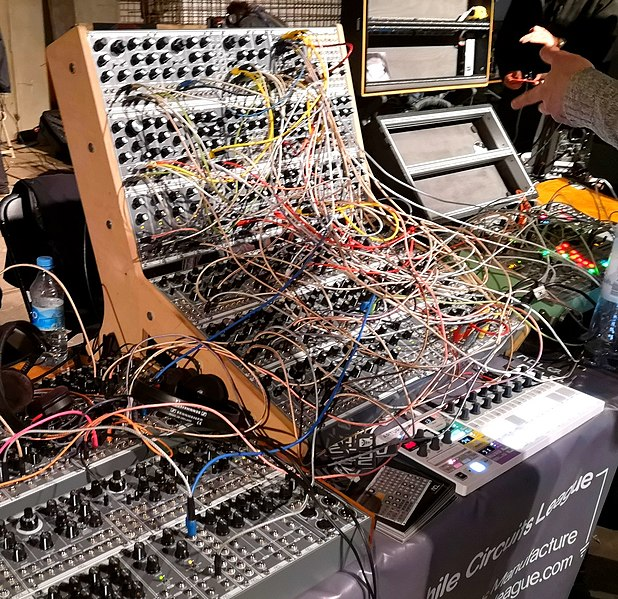

hitchhiker's guide to embedded audio
intro - DON'T PANIC

nonsense words/phrases
analogue
analogue
mics/sensors
faders/pots/inputs/outputs
encoders/buttons?
pure analogue
typical input example
mic amp
filters
power supply
noise
filtering
linear
modern switch-mode
testing
oscilloscopes
audio test equipment
diagnosis
schematics
integrated circuits (ICs)
copper
schematic tools
old school
proprietary behemoths
new free open source tools
printed circuit boards (PCBs)
connection puzzle
layers
hi-speed
differencial pairs
rules and checks
manufacturing specs/constraints
kicad
testing
circuit simulation
circuitjs (falstad)
limitations
digital audio circuits
analogue-to-digital converter (ADC)
transport
control
clocks and bits
microcontrollers
power and clocks
high speed signals
datasheets
assembly
c/c++
compilers
building
debugging
peripherals
embedded programming
hard real-time
stack overflow
audio buffers
dsp
output
usb
audio